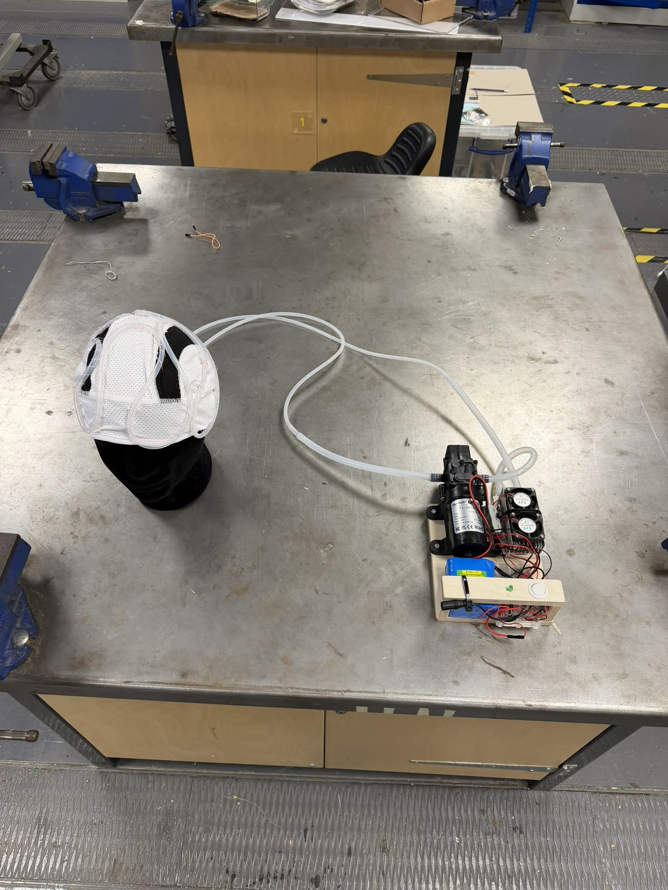
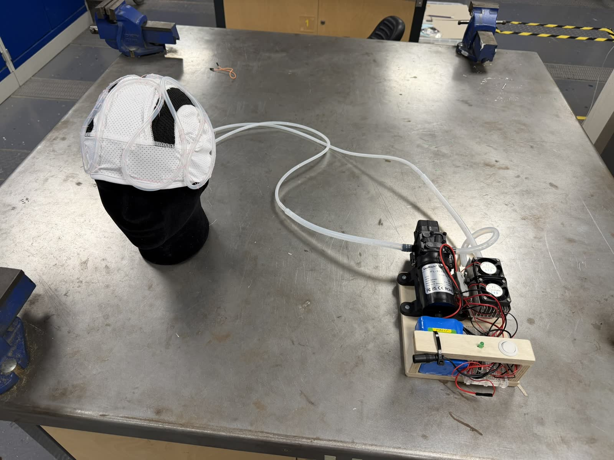
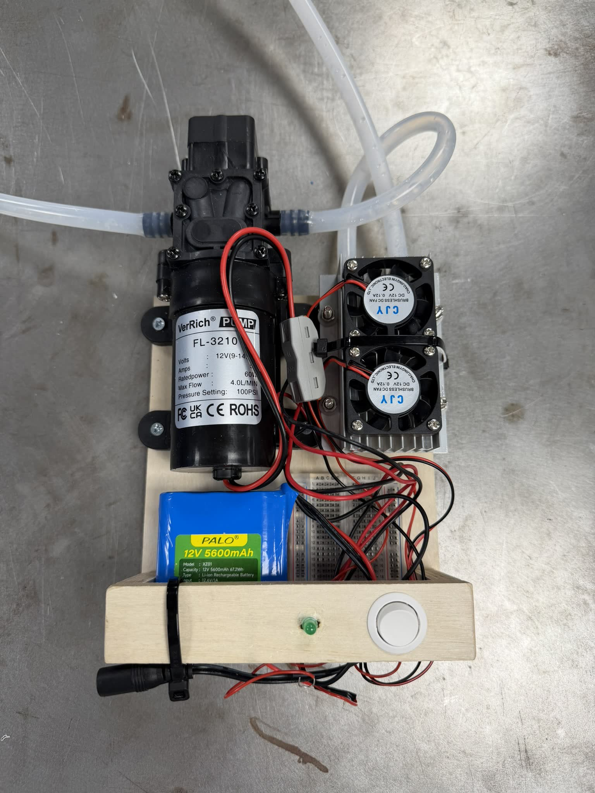

Water-cooled hat
A rapid-prototyping brief from the first semester of the Cleantech Innovation course: design a hat built around an innovative cleantech feature.
We went after active cooling. A hat that can genuinely pull heat off the head has real uses in hot climates — motorcycle helmets, hard hats on construction sites — where heat is a safety and productivity problem rather than just a comfort one.
The prototype used a 12V pump and Peltier semiconductors — the same principle as a small fridge — to chill water and circulate it through tubing routed across the hat. The next phase would have added control systems to regulate it.
FIG. 01 — PROTOTYPE


